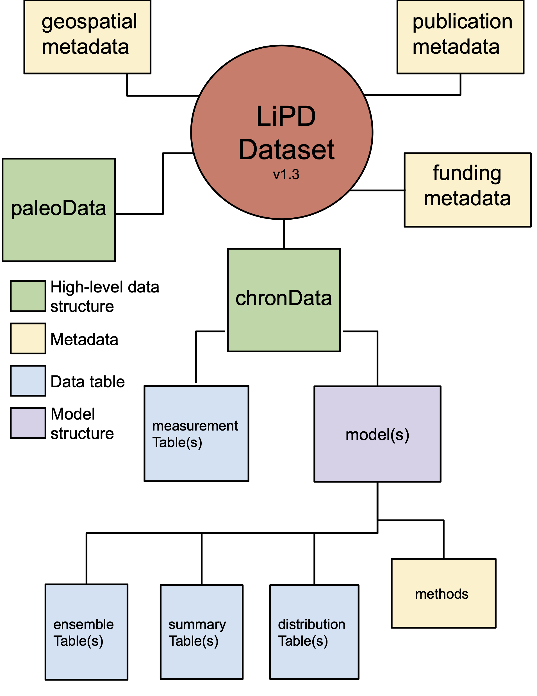

Introduction¶
Pyleoclim is a Python package designed for the analysis of paleoclimate data. Pyleoclim leverages various data science libraries (numpy, pandas, scikit-learn) for time series analysis, as well as and Matplotlib and Cartopy for the creation of publication-quality figures. The package is designed around object-oriented Series, which can be directly manipulated for plotting, spectral and wavelet analysis, and other time series-appropriate operations. Basic familiarity with Python is essential, and many good tutorials exist on the topic.
{kind=link}
Pyleoclim natively “speaks” the language of Linked Paleo Data (LiPD), which enables it to handle most of the data transformations internally, taking a good chunk of the pain out of analyzing paleoclimate data. The package is aware of age ensembles stored via LiPD and uses them for time-uncertain analysis. Age ensembles can be generated through the GeoChronR package, which natively stores them as ensemble tables in LiPD.
While convenient for the representation of paleoclimate observations, LiPD is not the only point of entry into Pyleoclim. The Series class is very flexible, and allows to apply Pyleoclim functionality to virtually any timeseries, including instrumental or model-generated data, as Excel spreadsheets, numpy arrays or pandas dataframes. Indeed, Pyleoclim is the workhorse supporting more general machine-learning functionalities for all manner of timeseries.
Getting Started¶
Working with Pyleoclim
The Pyleoclim UI makes use of specialized routines which are described in details in advanced funtionalities.
Advanced functionalities
Getting Involved¶
Pyleoclim was originally developed to allow scientists to analyze paleoclimate datasets, including visualization, mapping, and time series analysis. Pyleoclim has been made freely available under the terms of the GNU Public License.
There are many ways to get involved in the development of Pyleoclim <_contributing_to_pyleoclim>:
If you write a paper making use of Pyleoclim, please cite it thus.
Report bugs and problems with the code or documentation to our GitHub repository. Please make sure that there is not outstanding issues that cover the problem you’re experiencing.
Contribute bug fixes
Contribute enhancements and new features
Contribute to the code documentation, and share your Pyleoclim-supported scientific workflows via our public repository (LiPDBooks).